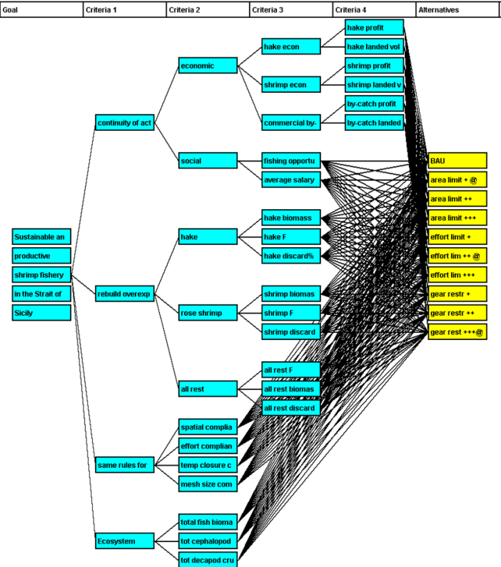
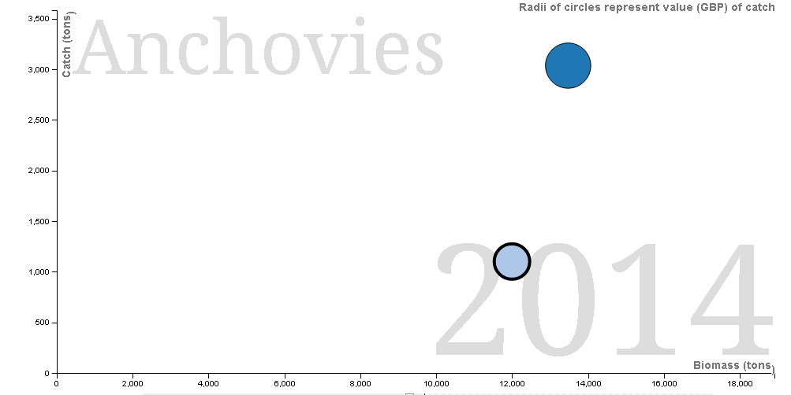

Decision Support Framework
Decision Support Framework

The MareFrame Decision Support Framework is a pragmatic planning process for moving towards an Ecosystem Approach to Fisheries Management. Click on the map of Europe to the left to see all case studies. Please review the case study and select the Multi-Criteria Analysis or Bayesian Belief Network below.
Case Study: Strait of Sicily
Objective: The case study focuses on the development of a reliable tool for the implementation of the ecosystem approach to fisheries management (EAFM) in the Strait of Sicily (SoS), one of the most important fishing area in the Mediterranean basin. The main aim is to provide advice for the long-term biological and socio-economic sustainability of trawl fisheries targeting deep-water rose shrimp and hake considering trophic interactions among the stocks as well as the main environmental drivers affecting the ecosystem. Four main management objectives have been identified during the case study meetings: i) rebuilding overexploited stocks; ii) long-term continuity of the fishing activities; iii) same rules for all the fishing fleets; iv) good environmental status.
Management Problem
Trawl fisheries play a key role for the exploitation of commercial stocks in the SoS region either from a socio-economic point of view, in particular in Italy, and for their impacts on the ecosystem. Trawlers from different countries (i.e. Italy, Tunisia, Malta, Libya, Egypt) and under different management regimes exploit shared stocks in national and international waters within the SoS region. In the last ten years Italian trawlers have suffered a declining in both productivity and economic performance due to several co-occurring factors such as: i) overfishing (i.e. decreasing of cpue); ìì) raising of the costs, iii) poor market condition (e.g. low gross prices of fish products), iv) competition with low-price sea food products; v) increased and unregulated access at the fishing grounds in international waters, vi) lack of common management rules shared between the national fleets exploiting the stocks (Italy, Malta, Tunisia, Libya, Egypt); vii) old age of the trawlers, viii) lack of marketing actions to increase the quality and value of the products. In addition, fisheries suffer of low salaries for the crew and unsatisfactory quality of life. The result is that the working conditions are not attractive to young people to ensure generational replacement. Finally, infrastructures in Mazara del Vallo and the other local ports are inadequate. In 2016 the General Fisheries commission for the Mediterranean (GFCM) established a multiannual management plan (plan) for the fisheries targeting European hake or deep-water rose shrimp in the marine waters of GSA 12, 13, 14,15 and 16 (Strait of Sicily), as defined in Resolution GFCM/33/2009/2. The plan includes, inter-alia, the establishment of three FRAs (Fisheries Restricted Areas) to protect hake and rose shrimp juveniles and the closure of the Gulf of Gabes (GSA 13) for three months in summer with the objective to achieve FMSY for HKE and DPS by 2020. The CS can substantially contribute to the development of the GFCM management plan facilitating the inclusion in the plan of a more holistic approach and the provision of a strategic advice for ecosystem based management..
Management Setting:
The nations involved in fisheries management in the area are Italy, Malta, Tunisia and Libya (even though the study area does not include the Tunisian waters). The regional bodies for cooperation on resource management or environmental issues are the General Fisheries Commission for the Mediterranean1 (GFCM), EU-DG MARE, and the International Commission for the Conservation of Atlantic Tunas2 (ICCAT). The relevant international conventions in place are UNCLOS3 , Barcelona Convention4, ACCOBAMS5, and RAMSAR6. The GFCM plays a key role in management of the aquatic resources. It is the Regional Fisheries management Organization that under the auspices of the FAO co-ordinate activities related to fishery management, regulations and research in the Mediterranean and Black Seas and connecting waters. The GFCM has the authority to adopt binding recommendations for fisheries conservation and management in its Convention Area and plays a critical role in fisheries governance in the Region. Italian fisheries policy is strongly conditioned by EU regulations through the Common Fisheries Policy (CFP). In conformity with subsidiarity principles decided within the EU, Italy has adopted complementary tools for the realization of specific management policy. Sicily is a region with autonomous status and it can rule on fisheries matters with the exception of the fleet policy which is regulated at national level. As such, the Region of Sicily can adopt plans for the protection of marine living resources designed to further reduce fishing mortality, over and beyond what is already enforced at national or Community level. The management Plans enforced in the last years however basically lack of harvest control rules to dynamically adapt the catch/effort to the resources availability. The main regulation governing management in the EU waters of the Strait of Sicily is the EU reg. 1967/2006 related to the management of fisheries resources in the Mediterranean Sea and the new Common Fisheries Policy (EU reg. n. 1380/2013). The first establish the implementation of National management plans for relevant fisheries whereas the CFP introduce the adoption of multi-annual management plans for target commercial stocks. Specific EU provisions against IUU fishing has been enforced by the Regulation (EC) No.1005/2008 of 29 September 2008, establishing a Community system to prevent, deter and eliminate illegal, unreported and unregulated fishing, and Regulation (EC) No. 1224/2009 of 20 November 2009, establishing a Community control system for ensuring compliance with the rules of the common fisheries policy. Other policy tools in the areas are related to Marine Strategy Framework Directive (MSFD), Barcelona convention (the Convention for the Protection of the Mediterranean Sea Against Pollution) and ACCOBAMS (Agreement on the Conservation of Cetaceans). MSFD descriptor 3 addresses directly the status of exploited fish and shellfish stocks. Conservation priorities are linked to two Marine Protected Areas in south Sicily (Isole Egadi, Isole Pelagie) and to several Ramsar areas. The marine spatial planning policy will also play an important role on the management aiming to sustainable ecosystem services provided by the Strait of Sicily area. The assessment of the status of the stocks in the region is carried out both by the working groups of the GFCM and the Scientific, Technical and Economic Committee for Fisheries (STECF) of the EC. GFCM plays a key role in fostering the development of assessment on shared stocks between EU and non-EU countries also in cooperation with the FAO regional project Med-SudMed. Proxies for FMSY (i.e. F01, E=0.4) are used to assess the status of the main stocks.
Main objectives and criteria:
A management proposal for the case study will be evaluated in relation to a set of objectives and criteria. Some criteria refer to the EU policies: the CFP and the MSFD. For instance, the CFP requires that the spawning stock biomass (SSB) of any commercial fish stock should be at or above the level consistent with a Maximum Sustainable Yield (MSY) no later than the year 2020. The development of regional, multi-stock long-term management plans are envisaged as an important element of the CFP.
| Management objectives | Candidate operational objectives and indicators |
|---|---|
| Rebuild the overexploited stocks of deep-water rose shrimp and hake | Sustainable fisheries:
|
| Long-term continuity of fishing activities | Improve profitability of fishing activities. Higher crew salaries and improved livelihood of fishers:
|
| Same rules for all | Management compliance:
|
| Good ecological status of the ecosystem |
|
Multi-Criteria Analysis

MCA using Gadget output 2020 MCA using Gadget output 2030Scenario Model output

Management Scenarios
Business-as-usual:
the Strait of Sicily management and environmental forcing will not change in the future years. ATLANTIS and GADGET simulations are based on last estimates of fishing mortalities, recruitment and spawning biomass. F is kept constant and the recruitment randomly variable around the last three year average. The purpose of this scenario is to establish a baseline for comparing the outputs of alternative management scenarios.
F reduction scenarios:
These scenarios simulates the effect of a reduction in fishing mortality toward a sustainable exploitation (F≤ FMSY) with ATLANTIS and GADGET. Member States are committed to restore and maintain fish stocks above biomass levels capable of producing maximum sustainable yield (BMSY). In order to reach that they must set fishing limits according to the exploitation rate consistent with this aim (FMSY) by 2020 at the latest for all commercial stocks. The focus of this simulations is to investigate the short-term (2020) and long-term (2030) effect of reduction of F from its current level (Fcurr) to the level necessary to achieve maximum sustainable yield (F01 as proxy of FMSY) for hake and deep water rose shrimp, which are target of the same fishing fleets. In particular, three scenarios of progressive decrease of fishing mortality from 2015 to 2020 have been simulated in ATLANTIS:
- F reduction from Fcurr to FMSY for deep water rose shrimp: 5% annual decrease in fishing mortality;
- Intermediate F reduction: 15% annual decrease in fishing mortality;
- 3. F reduction from Fcurr to Fmsy for hake: 20% annual decrease in fishing mortality.
FMSY estimation: the BAU scenario in ATLANTIS was used as baseline over which simulations were re-run by just changing the fishing mortality for hake and deep water rose shrimp to reconstruct the sustainable yield curve and compare it to assessments estimates. The F mortality was progressively increased from 0 to 3.0 for deep water rose shrimp and from 0 to 1.0 for hake to estimate the FMAX, F01 for both stocks.
Fisheries Restricted Areas scenario (FRA):
The aim of this scenario is to investigate the effect associated with the closure of three FRAs included in the GFCM management plan and calculate the impact on the two target stocks (HKE and DPS) and fisheries in the medium term (2020) and long term (2030). The impact on commercial stocks institution of the 3 FRAs in the Strait of Sicily was simulated in ATLANTIS by mean of a reduction of fishing mortality proportional to the FRA percentage coverage of ATLANTIS polygons. Fishing mortality is redistributed to the surrounding boxes. A more complex simulation will be implemented in 2017 to address more consistently the FRAs effects on target stocks and fisheries, taking into account the spatial distributions of the target stocks, the re-distribution of the fishing effort from VMS data and a spillover effect.
Gear selectivity scenarios:
Scenarios will be based on the results of experimental trawl fishing trials carried out in 2016 in the frame of the EU project MINOUW. Simulations will be done in 2017 with both ATLANTIS and GADGET and provided for DST prototype II assuming three different proportion of vessels mounting sorting grids on the nets (50, 75, 100%).
Regulate access to fishing grounds:
The effect of adopting a list of authorized fishing vessels to fish in the SoS area will be contrasted with the current situation (BAU) where access to fishing grounds in international waters is permitted to all the vessels registered by GFCM. The effects of IUU fishing will be simulated assuming different levels of uncompliance to the measures enforced (i.e. FRAs, numbers of allowed days at sea, etc.).
Good ecological status of the ecosystem:
The purpose of this scenario is to evaluate the future status of fisheries and ecosystem by addressing management measures capable of reducing environmental impact without major impacts on the fisheries sector.
To be included in the second version of the decision support model - climate change scenarios:
Future simulations on climate scenarios will be based on the SRES approach taken by the IPCC since 2000, incorporating socio-political drivers as well as projected climate change. Two distinct socio-political scenarios, broadly consistent with the IPCC A2 (National Enterprise) and B1 (Global Community) storylines, formulated as part of the FP7 project VECTORS, will be tested. In the Mediterranean Sea a general rise of temperature up to 1 degree Celsius with an average increase of around 0.6°C is projected for both scenarios. Values for nutrient levels will be adjusted according to the respective future scenario based on the assessments given in the European Lifestyles and Marine Ecosystems report (www.elme-eu.org, Langmead et al. 2007), where a large change was taken to be 60%, a standard change 30%. The A2 scenario will therefore include a 60% increase in nutrient output by rivers.